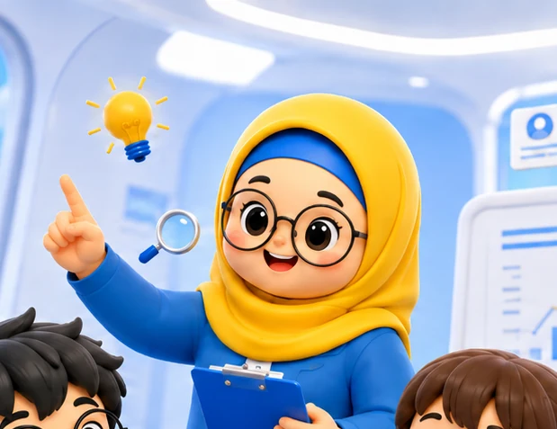

1
Jelas
Konsep dijelaskan dengan bahasa yang dapat dipahami siswa.
Inersia menggunakan proses seleksi untuk menilai kesiapan akademik, cara mengajar, dan kemampuan tutor menjalankan sistem pemantauan belajar.
Riwayat pendidikan memberi konteks akademik. Proses seleksi membantu Inersia menilai kemampuan yang relevan untuk mendampingi siswa.

Konsep dijelaskan dengan bahasa yang dapat dipahami siswa.
Koreksi diarahkan pada kesalahan dan kebutuhan siswa.
Perkembangan ditinjau melalui latihan dan evaluasi.
Komunikasi dengan siswa dan orang tua dijaga secara bertanggung jawab.
Profil tutor individual akan ditampilkan setelah data dan izin penggunaan tersedia.